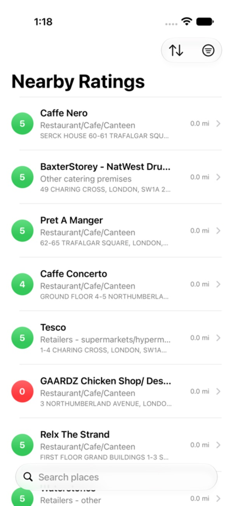
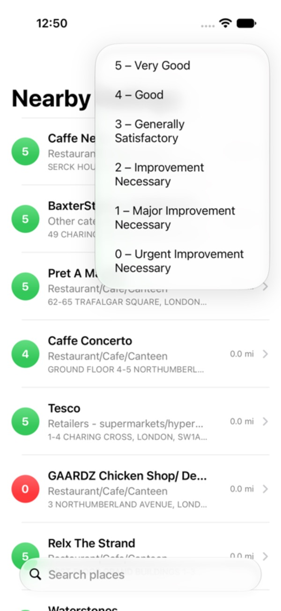
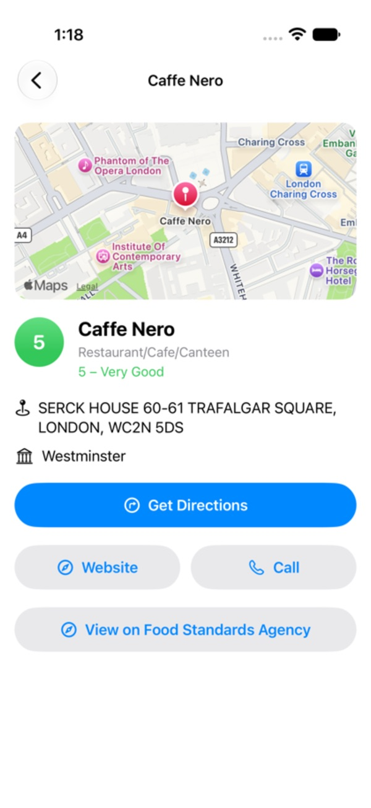

Official FSA data
Every rating comes straight from the Food Standards Agency, the same data local councils publish after an inspection. England, Scotland, Wales and Northern Ireland are all covered.
In England, food businesses don't have to put their hygiene sticker in the window. FSA Food Hygiene Ratings shows you the official score anyway, for hundreds of thousands of restaurants, cafes, takeaways, pubs and supermarkets across the UK.
Contains public sector information licensed under the Open Government Licence v3.0. Rating data is provided by the Food Standards Agency. This app isn't made by or affiliated with the FSA.

Dining out, ordering on a delivery app or somewhere new for the weekend - check the score in seconds.
Every rating comes straight from the Food Standards Agency, the same data local councils publish after an inspection. England, Scotland, Wales and Northern Ireland are all covered.
Open the app and see the closest places first, each with its score and distance.
Look up a place by name, or check the takeaway you're about to order from.
Show only 5s, or find out which places nearby scored 0.
Every place has a map, directions, its website, a call button and a link to its full FSA record.


Councils score every food business from 0 to 5 on how it handles food, the state of the building and how it manages hygiene.
Hygiene standards are very good and fully comply with the law.
Hygiene standards are good.
Hygiene standards are generally satisfactory.
Some things need to get better.
A lot needs to get better.
Things need to get better, now.